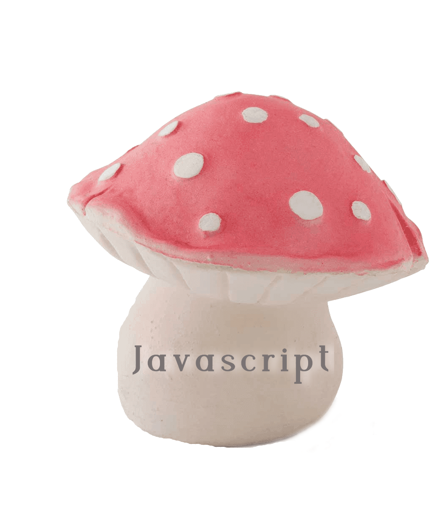

Hi! My name is Julia Malyuta and this is my Joy of Programming portfolio. You might be wondering about who exactly is the person behind the website. Well let me tell you a little about myself. My name, of course, is Julia and I am currently working on a degree in Computer Science.
I was born and raised in Rhode Island, but both my parents were born and raised in Russia, just moving here 20 years ago. My hobbies include talking to friends and learning new skills. I also have interests in flower knowledge and spirituality.